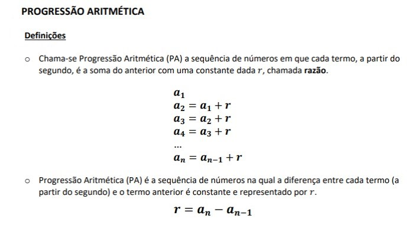
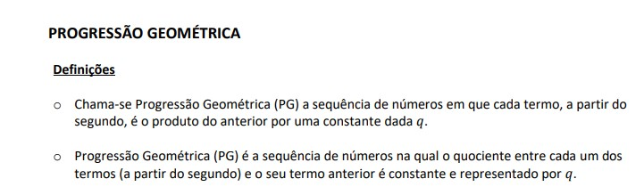

Progressão aritmética e Progressão geométrica
Definição:
progressão aritmética – PA

é uma sequência de valores que apresenta uma diferença constante entre números consecutivos.
A progressão geométrica – PG

apresenta números com o mesmo quociente na divisão de dois termos consecutivos.
Para se estabelecer a lei de formação, existem três formas, sendo elas:
Fórmula de recorrência:
São dadas duas regras: uma para identificar o primeiro termo (𝑎1) e outra para calcular cada
termo (𝑎𝑛) a partir de seu antecedente (𝑎𝑛−1)
Expressando cada termo em função da sua posição n
É estabelecida uma fórmula que expressa 𝑎𝑛 em função de 𝑛. Chamamos essa fórmula de
Termo Geral.
Aqui é importante observar que a incógnita “n” da fórmula varia conforme a posição do
termos. Logo, precisamos estabelecer uma relação entre o valor do termo e sua posição.
Por propriedade dos termos
É informada a propriedade que os termos da sequência devem apresentar
*Autoavaliação
Eu tive dificuldades neste conteúdo, é um pouco mais complicado PG, comparado a PA, ainda não compreendi todo o conteúdo então acho que o que eu escolhi para colocar no portfólio não foi nada intuitivo e explicado.
fonte : https://www.todamateria.com.br/pa-e-pg/